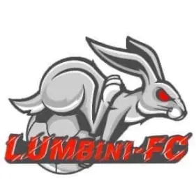
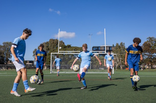
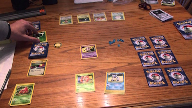
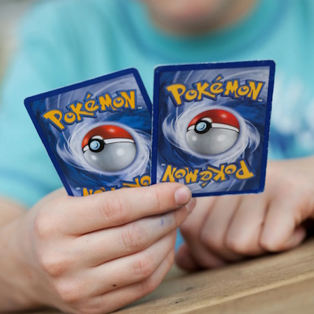

Lumbini Academy is a school in Thingangyun, Yangon, Myanmar founded in 2008.
I studied at Lumbini Academy for a decade from kg to 8th grade. The school provides education for primary, secondar and high school
that aligns with the Myanmar school system.
There was no cca until 4th grade so my primary school years are without a cca. I joined the football club on year 5, was on the weekly training sessions and got in the first team during year 7, but I didn't get to play any offical matches since after I got in the first team the school closed physical classes and activities due to covid-19 and political reasons. So I didn't get to play for the school team.
I was one of the founding members of the councelling club. Created by me and my classmates/friends. I was incharge of the letter box, where students sends us letters confessing or asking for advices and we reply to back to them with another letter.
After finishing 8th grade in Myanmar, most students decide on choosing the government course or the ICGSE O levels. I chose O levels and I had to switch school to attend O Levels. A friend of mine found it initially and also asked me to attend GIC also, which is how I got into this school. Eventhough I was in this school for a little under a year, I still enjoyed my time there and made new friends.
I was only there for a year so I didn't really have much time for CCA, but I still joined the football cca. Played in an annual GIC school tournment and was in the school team. Since the school was new, the tournment stared the football club so I was one of the first memebers of the club.
I'm now currently stydying in Nanyang Polytechnics in year 2 under Game Development and Technology. Initially I had no plans to come to Singapore to study. It was a last minute plan due to the political situation of Myanmar. I was scared at first, it was my first time living alone for a long time and people around me are the ones I'm not familiar with. But I got okay with the situation and now I'm comfortable with nyp and Singapore
Didn't get into the first team so I had to go join the recreational squad. I didn't get to do much with the cca since I'm not in first team, however during the and the recreational team, I have met a lot of people with similar intrests, which got me playing football outside of school.
The club got 2 sections, International chess and Chinese chess. I went for the International chess section. I stopped playing chess for years already, until this cca sparked my intrest in chess again.
I joined this cca by accident, thiking this was the chess cca. I stayed after finding out my friend was also in the cca and they have Pokemon TCG which I'm intresed in. I didn't really do much in the board games cca except for the bi-weekly sessions to play Pokemon trading card game. Before joining this cca I didn't know how to play Pokemon tcg.
 